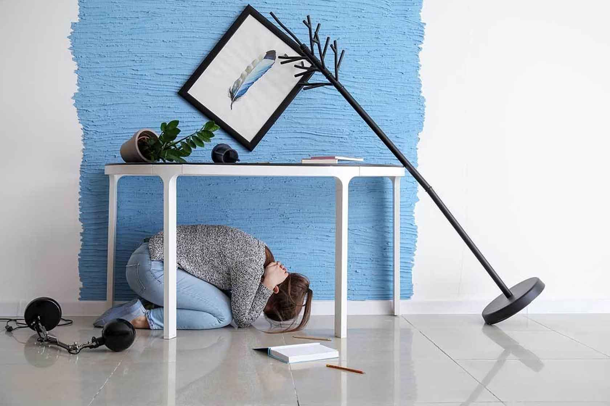

¿Qué es la Prevención Sísmica?
La prevención sísmica es el conjunto de acciones y medidas que se toman para reducir los riesgos y los posibles daños que puede causar un terremoto. Su objetivo es salvar vidas y proteger propiedades, enfocándose en la preparación antes de que ocurra un sismo.

Acciones Clave para la Prevención
La preparación es una responsabilidad de todos. Aquí tienes una lista de acciones importantes que puedes tomar hoy mismo:
- **Identifica zonas seguras:** Dentro de tu hogar, escuela o lugar de trabajo, encuentra los lugares más seguros, como debajo de una mesa resistente o lejos de ventanas.
- **Prepara una mochila de emergencia:** Debe incluir agua, alimentos no perecederos, un botiquín de primeros auxilios, linterna, radio a pilas y copias de documentos importantes.
- **Elabora un plan familiar de emergencia:** Reúnete con tu familia para acordar puntos de encuentro y formas de comunicación en caso de que se separen.
- **Participa en simulacros:** Practicar te ayudará a saber cómo reaccionar de manera automática y segura durante un evento real.
Asegura tus Muebles
Los objetos que se caen son una de las principales causas de lesiones durante un sismo. Asegura los muebles altos, estanterías y cuadros a las paredes para evitar que se derrumben.
